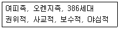
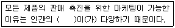
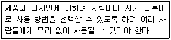
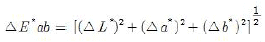
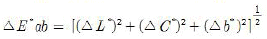
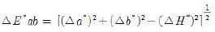
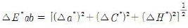

컬러리스트기사 (2018-08-19 기출문제)
1과목: 색채심리 마케팅
1. 변수를 사용한 시장 세분화 전략 중 다음의 분류사례는 어떤 세분화기준에 속하는가?

- 인구통계적 변수
- 지리적 변수
- 심리분석적 변수
- 행동분석적 변수
(정답률: 46%)

2. 색채와 감정 관계에 관한 설명 중 옳은 것은?
- 녹색, 보라색 등은 따뜻함이나 차가움이 느껴지지 않는 중성색이다.
- 색의 중량감은 색상에 따라 가장 크게 좌우된다.
- 유아기, 아동기에는 감정에 따른 추상적 연상이 많다.
- 증명도 이하의 채도가 높은 색은 부드러운 느낌을 준다.
(정답률: 67%)
3. 색채의 공감각 현상에 대한 설명 중 옳은 것은?
- 하나의 자극으로부터 서로 다른 감각이 동시에 현저하게 공통적으로 발생하는 것을 의미한다.
- 색의 상징성이 언어를 대신하는 것이다.
- 가벼운 색과 무거운 색에서는 공감각 현상을 볼 수 없다.
- 언어로는 표현하기 어려운 공간 감각이나 사회적, 종교적 규범 같은 추상적 개념을 표현한다.
(정답률: 69%)
4. 다음 중 ( )에 들어갈 적절한 단어는?

- 상상
- 의견
- 연령
- 욕구
(정답률: 88%)
5. 다음 중 시장세분화의 목적이 아닌 것은?
- 기업의 이미지를 통합하여 통일감 부여
- 변화하는 시장수요에 능동적으로 대처
- 자사 제품의 차별화와 시장 기회를 탐색
- 자사와 경쟁사의 장단점을 효과적으로 평가
(정답률: 75%)
6. 컬러 이미지 스케일(Color lmage Scale)에 대한 설명 중 틀린 것은?
- 색채이미지를 어휘로 표현하여 좌표계를 구성한 것이다.
- 유채색 경향 및 선호도 비교분석에 사용된다.
- 색채의 3속성을 체계적으로 이미지화한 것이다.
- 색채가 주는 느낌을 대립되는 형용사 평가어로 평가하여 나타낸 것이다.
(정답률: 39%)
7. 지역색(local color)에 대한 설명으로 거리가 먼 것은?
- 특정 지역에서 추출된 색채
- 특정 지역의 하늘과 자연광을 반영하는 색채
- 특정 지역의 흙, 돌 등에 의해 나타나는 색
- 특정 지역의 사람들이 선호하는 색
(정답률: 63%)
8. 흐린 날씨의 지역 사람들이 선호하는 색체에 대한 설명 중 틀린 것은?(오류 신고가 접수된 문제입니다. 반드시 정답과 해설을 확인하시기 바랍니다.)
- 일반적으로 연한 회색을 띤 색채, 약한 한색계를 좋아한다.
- 건물의 외관 색채는 주로 파랑과 연한 초록, 회색 등을 사용하다.
- 실내색채는 주로 초록, 청록과 같은 한색계의 색채를 선호한다.
- 북유럽계의 족은 한색계에 예민한 감수성을 지니고 있다.
(정답률: 61%)
9. 다음 중 태양빛의 영향으로 강렬한 순색계와 녹색을 선호하는 지역은?
- 뉴질랜드
- 케냐
- 그리스
- 일본
(정답률: 72%)
10. 마케팅에서 색채의 효과가 아닌 것은?
- 주변 제품과의 색차 정도를 고려하여 대상물의 존재를 두드러지게 함
- 배색이나 브랜드 색채를 통일하여 대상물의 의미와 이미지를 전달함
- 색채의 변경은 공장의 제조라인 수정에 따른 막대한 경비를 발생시킴
- 유행색은 그 시대가 선호하는 이미지이므로 소비자의 라이프스타일이나 가치관에 영향을 미침
(정답률: 80%)
11. 색채연구에서 자주 활용되는 의미분별법(Semantic Differential Method)에서 사용되는 척도는?
- 비례척도(Ratio Scale)
- 명의척도(Nominal Scale)
- 서수척도(Ordinal Scale)
- 거리척도(Interval Scale)
(정답률: 39%)
12. 제품의 라이프사이클(life cycle)단계에 따라 홍보 전략이 달라져야 성공적인 색채마케팅 결과를 얻을 수 있다. 다음 중 성장기에 합당한 홍보 전략은?
- 제품 알리기와 혁신적인 설득
- 브랜드의 우수성을 알리고 대형시장에 침투
- 제품의 리포지셔닝, 브랜드 차별화
- 저가격을 통한 축소 전환
(정답률: 54%)
13. 모 카드회사에서 새로 출시하는 카드를 사용하는 소비자의 소비욕구 유형에 맞추어 포인트를 올려준다고 광고를 하고 있다. 이 때 적용되는 마케팅은?
- 제품 지향적 마케팅
- 판매 지향적 마케팅
- 소비자 지향적 마케팅
- 사회 지향적 마케팅
(정답률: 79%)
14. 병원 수술실의 벽면체로 적합한 것은?
- 크림색
- 노랑
- 녹색
- 흰색
(정답률: 73%)
15. 소비자 행동에 영향을 미치는 요인 중 행동양식, 생활습관, 종교, 인종, 지역 등에 영향을 받는 요인은?
- 문화적 요인
- 경제적 요인
- 심리적 요인
- 개인적 특성
(정답률: 82%)
16. 마케팅에서 색채의 기능에 대한 설명으로 틀린 것은?
- 홍보 전략을 위해 기업컬러를 적용한 신제품을 출시하였다.
- 컬러 커뮤니케이션은 측색 및 색채관리를 통하여 제품이 가진 이미지나 브랜드의 의미를 전달한다.
- 상품자체는 물론이고 브랜드의 광고에 사용된 색채는 소비자의 구매력을 자극한다.
- 마케팅 목표를 달성하기 위해 색채를 적합하게 구성하고 이를 장기적, 지속적으로 개선해 나간다.
(정답률: 38%)
17. 색채와 연상의 연결이 옳은 것은?
- 빨강 - 정열, 혁명
- 녹색 - 고귀, 권력
- 노랑 - 위험, 우아
- 흰색 - 청결, 공포
(정답률: 75%)
18. 브랜드별 고유색을 적용한 색채마케팅 사례가 틀린 것은?
- 맥도날드 - 강 심벌, 노랑 바탕
- 포카리스웨트 - 파랑, 흰색
- 스타벅스 - 녹색
- 코카콜라 - 빨강
(정답률: 76%)
19. 색의 선호도에 대한 설명이 틀린 것은?
- 색에 대한 일반적인 선호 경향과 특정 제품에 대한 선호 색은 동일하다.
- 선호도의 외적, 환경적인 요인은 문화적, 사회적 요인으로 구분할 수 있다.
- 선호도의 내적, 심리적 요인으로는 개인적 요인이 중요하게 작용하다.
- 제품의 특성에 따라서 선호되는 색채는 고정된 것이 아니다.
(정답률: 79%)
20. 색채조사를 위한 설문지의 응답형식에 대한 설명으로 틀린 것은?
- 개방형 설물은 응답자가 자유롭게 자신의 생각을 응답하도록 하는 것이다.
- 폐쇄형 설문은 두 개 이상의 응답을 주고 그 중에서 하나 이상 선택하도록 하는 것이다.
- 심층면접법(depth interview)으로 설문을 할 때는 개방형 설문이 좋다.
- 예비적 소규모 조사(pilot survey) 시에는 폐쇄형 설문이 좋다.
(정답률: 39%)
2과목: 색채디자인
21. 몬드리안을 중심으로 한 신조형주의 운동으로 개성을 배제하고 검정, 흰색, 회색, 빨강, 노랑, 파랑 등의 원색을 주로 사용하여 각 색 면의 비례와 배분을 중요시 했던 사조는?
- 데 스틸
- 큐비즘
- 다다이즘
- 미래주의
(정답률: 60%)
22. 바우하우스에 관한 설명 중 틀린 것은?
- 뮌헨에 있던 공예학교를 빌려 개교하였다.
- 초대 교장은 건축가인 월터 그로피우스이다.
- 데사우로 교사를 옮기면서 전성기를 맞이했다.
- 1933년 나치스에 의해 폐교되엇다.
(정답률: 29%)
23. 색채계획에 이용된 배색방법에 대한 설명 중 거리가 먼 것은?
- 보조색은 전체의 느낌을 전달하며 전체 색채효과를 좌우하게 된다.
- 일반적으로 주조색, 보조색, 강조색으로 구성된다.
- 보조색은 주조색과 색상이나 톤의 차를 작거나 유사하게 하면 통일감 있는 조화를 이룰 수 있다.
- 강조색은 대상에 액센트를 주어 신선한 느낌을 만든다.
(정답률: 79%)
24. 시각의 지각 작용으로서의 균형(balance)에 대한 설명이 틀린 것은?
- 평형상태(equilibrium)로서 사람에게 가장 안정적이고 강한 시각적 기준이다.
- 서로 반대되는 힘의 평형상태로 시각적 안정감을 갖게 하는 원리이다.
- 시각적인 수단들의 변화는 구성의 무게, 크기, 위치의 요인들을 포함한다.
- 그래픽 디자인과 멀티미디어 디자인 영역에만 해당되는 조형원리이다.
(정답률: 81%)
25. 인간과 환경, 환경과 그 주변의 계(System)가 상호관계 속에서 긍정적인 결과를 도출하는 방향으로 나아가게 하는 디자인 접근 방법은/
- 기하학적 접근
- 환경친화적 접근
- 실용주의적 접근
- 기능주의적 접근
(정답률: 77%)
26. 제품디자인 색체계획에 사용될 다음의 배색 중 배색원리가 다른 하나는?
- 밤색 - 주황
- 분홍 - 빨강
- 하늘색 - 노랑
- 파랑 - 청록
(정답률: 79%)
27. 잡지 매체의 특징이 아닌 것은?
- 매체의 생명이 짧다.
- 주의력 집중이 높다.
- 표적독자 선별성이 높다.
- 회람률이 높다.
(정답률: 50%)
28. 디자인은 목적이 없거나 무의식적인 활동이 아니라 명백한 목적을 지닌 인간의 행위이다. 디자인을 하는 데 있어서 가장 중요한 두 가지 목적을 연결한 것은?
- 실용성 - 심미성
- 경제성 - 균형성
- 사회성 - 창조성
- 편리성 - 전통성
(정답률: 82%)
29. 좋은 디자인의 조건으로 거리가 먼 것은?
- 최소의 경비로 최대의 효과를 얻을 수 있는 디자인
- 창의적이고 독창적인 디자인
- 최신 유행만을 반영한 디자인
- 사용자의 편의를 고려한 디자인
(정답률: 82%)
30. 게슈탈트의 그루핑 법칙과 관련이 없는 것은?
- 보완성
- 근접성
- 유사성
- 폐쇄성
(정답률: 67%)
31. 다음에서 설명하는 유니버설 디자인의 원칙은?

- 직관적 사용성
- 공정한 사용성
- 융통성 사용성
- 효과적 정보전달
(정답률: 54%)
32. 오늘날 모든 디자인 영역에서 친자연성의 중요성 더욱 더 강조되고 있다. 다음 중 친자연성의 의미를 가장 잘 설명한 것은?
- 디자인에서 생물의 대칭적인 모습을 강조한다.
- 모든 디자인 영역에서 인공색을 주제로 한 디자인을 한다.
- 디자인 재료의 선택에 있어 주로 인공 재료를 사용한다.
- 디자인의 태도는 자연과의 공생 및 상생의 측면에서 이루어져야 한다.
(정답률: 81%)
33. 19세기 미술 공예 운동(Art and Craft movement)이 일어나게 된 근본 원인은?
- 미술과 공계작품의 가격이 급격하게 하락되었기 때문에
- 기계로 생산된 제품의 질이 현저하게 낮아졌기 때문에
- 미술작품과 공예작품을 구별하기 위해
- 미술가와 공예가의 사회적 위상을 제고시키기 위해
(정답률: 65%)
34. 관찰거리 변화에 따라 원경색, 중경색, 근경색, 근접색으로 구분하는 색채 계획 분야는?
- 시각디자인
- 제품디자인
- 환경디자인
- 패션디자인
(정답률: 64%)
35. 윌리엄 모리스(Willian Morris)가 중심이 된 디자인 사조와 관계가 먼 것은?
- 예술의 민주화ㆍ사회화 주장
- 수공예 부흠, 중세 고딕(Gothic)양식 지향
- 대량생산 시스템의 거부
- 기존의 예술에서 분리
(정답률: 50%)
36. 다음 중 광고의 외적 효과가 아닌 것은?
- 인지도의 제고
- 판매촉진 및 기업홍보
- 기술혁신
- 수요의 자극
(정답률: 79%)
37. 패션 디자인의 원리에 대한 설명 중 틀린 것은?
- 균형 : 시각의 무게감에 의한 심리적인 요인으로 균형을 보완, 변화시키기 위해 세부장식이나 액세서리를 이용한다.
- 색채 : 사람들이 가장 먼저 지각하고 느낌을 표현할 수 있어 소비자의 구매결정에 큰 영향을 미친다.
- 리듬 : 규칙적인 반복 또는 점진적인 변화가 있으며 디자인의 요소들의 반복에 의해 표현된다.
- 강조 : 강조점의 선택은 꼭 필요한 곳에 두며 체형 상 가려야 할 부위는 될 수 있는대로 벗어난 곳에 두는 것이 좋다.
(정답률: 25%)
38. 일반적인 색체계획 및 디자인 프로세스를 조사ㆍ기획, 색채계획ㆍ설계, 색채관리로 분류할 때 색채계획ㆍ설계에 해당되지 않는 것은?
- 체크리스트 작성
- 색채 구성 배색 안 작성
- 시뮬레이션 실시
- 색견본 승인
(정답률: 48%)
39. 불완전한 형이나 그룹들을 완전한 형이나 그룹으로 완성시키려는 경향이 있으며, 익숙한 선과 형태는 불완전한 것보다 완전한 것으로 보이기 쉬운 시각적 원리는?
- 근접성
- 유사성
- 폐쇄성
- 연속성
(정답률: 63%)
40. 디자인의 요소에 대한 설명으로 틀린 것은?
- 점이 일정한 방향으로 진행할 때는 직성이 생기며, 점의 방향이 끊임없이 변할 때는 곡선이 생긴다.
- 기하곡선은 이지적 이미지를 상징하고, 자유곡선은 분방함과 풍부한 감정을 나타낸다.
- 소극적인 면은 점의 확대, 선의 이동, 너비의 확대 등에 의해 성립된다.
- 적극적 입체는 확실히 지각되는 형, 현실적형을 말한다.
(정답률: 58%)
3과목: 색채관리
41. 두 개의 물체색이 일광에서는 똑같이 보이던 것이 실내 조명에서는 다르게 보이는 현상은?
- 조건등색
- 분광반사도
- 색각항상
- 연색성
(정답률: 62%)
42. 다음 중 무채색 재료의 설명으로 틀린 것은?
- 무채색 안료는 천연과 합성으로 이루어졌으며 모두 무기 안료로 구성된다.
- 검정색 안료에는 본 블랙, 카본블랙, 아닐린블랙, 피치블랙, 바인블랙 등이 있다.
- 백색 안료에는 납성분의 연백, 산화아연, 산화티탄, 탄산칼슘 등이 있다.
- 무채색 안료의 입자 크기에 따라 착색력이 달라지므로 혼색비율을 조절해야 한다.
(정답률: 61%)
43. 조색과 관련한 설명으로 틀린 것은?
- 고명도 색채 조색 시 극히 소량으로도 색채에 많은 영향을 줄 수 있으므로 유의하여야 한다.
- 메탈력이나 펄의 입자가 함유된 조색에는 금속입자나 펄입자에 따라 표면반사가 일정하지 못하다.
- 형광성이 있는 색채 조색 시 분광분포가 자연광과 유사한 Xe(크세논) 램프로 조명하여 측정한다.
- 진한 색 다음에는 연한 색이나 보색을 주로 관측한다.
(정답률: 68%)
44. 색료에 대한 설명으로 틀린 것은?
- 안료는 주로 용해되지 않고 사용된다.
- 염료는 색료의 한 종류이다.
- 도료는 주로 안료를 사용하여 생산된다.
- 플라스틱은 염료를 사용하여 생산된다.
(정답률: 67%)
45. 8비트 이미지 색공간으로 국제적으로 통용되는 기본적인 색공간은?
- AdobeRGB
- sRGB
- ProPhotoRGB
- DCI-P3
(정답률: 53%)
46. UHD(3840×2160)급 해상도를 가진 스마트폰의 디스플레이가 이미지와 영상을 500ppi로 재현한다면 디스플레이의 크기는?
- 2.88in × 1.62in
- 1.92in × 1.08in
- 7.68in × 4.32in
- 3.84in × 2.16in
(정답률: 42%)
47. 인쇄 잉크로 사용되는 안료로 가장 거리가 먼 것은?
- 로그우드 마젠타
- 벤지딘 옐로
- 프탈로시아닌 블루
- 카본 블랙
(정답률: 27%)
48. CIELAB 표색계에서 색차식을 나타내는 계산식으로 옳은 것은?




(정답률: 67%)
49. CIE 표준광에 대한 설명으로 가장 거리가 먼 것은?
- CIE 표준광은 CIE에서 규정한 측색용 표준광을 의미한다.
- CIE 표준광은 A, C, D65
- 표준광 D65는 상관색온도가 약 6500K인 CIE 주광이다.
- CIE 광원은 CIE 표준광을 실현하기 위하여 CIE에서 규정한 인공 광원이다.
(정답률: 42%)
50. 색공간의 색역(color gamut)범위가 바르게 연결된 것은?
- Rec.709 ＞ sRGB ＞ Rec.2020
- AdobeRGB ＞ sRGB ＞ DCI-P3
- Rec.709 ＞ ProPhotoRGB ＞ DCI-P3
- ProPhotoRGB ＞ AdobeRGB ＞ Rec.709
(정답률: 32%)
51. 기기를 이용한 조색에 대한 설명 중 가장 거리가 먼 것은?
- 색료 선택, 초기 레시피 예측, 레시피 수정 기능이 필요하다.
- 원료 조합과 만들어진 색의 관계를 예측하는 킬러모델이 필요하다.
- 측색 매칭 알고리즘을 이용하면 목표색과 일치한 스펙트럼을 갖도록 색을 조색한다.
- 색료 데이터베이스는 각 색료에 대한 흡수, 산란 특성 등 색료의 물리적, 화학적 특징에 대한 정보를 포함한다.
(정답률: 28%)
52. 육안색 비교를 위한 부스 내부의 조건에 대한 설명으로 올바르지 않은 것은?
- 일반적으로 부스의 내부는 명도 ∠가 약 45~55의 무광택의 무채색으로 한다.
- 부스 내의 작업면은 비교하려는 시료면과 가까운 휘도율을 갖는 무채색으로 한다.
- 조명의 확산판은 항상 사용한다.
- 어두운 색을 비교하는 경우의 작업면 조도는 2000lx에 가까운 것이 좋다.
(정답률: 37%)
53. 반사 물체의 색 측정에 있어 빛의 입사 및 관측 반향에 대한 기하학적 조건에 관한 설명으로 잘못된 것은?
- di:8° 배치는 적분구를 사용하여 조명을 조사하고 반사면의 수직에 대하여 8도 방향에서 관측한다.
- d:0 배치는 정반사 성분이 완벽히 제거되는 배치이다.
- di:8°와 8°:di는 배치가 동일하나 광의 진행이 반대이다.
- di:8°와 de:8°의 배치는 동일하나, di:8°는 정반사 성분을 제외하고 측정한다.
(정답률: 30%)
54. 컴퓨터 자동배색의 특징이 아닌 것은?
- 스펙트럼 데이터를 이용하여 아이소머리즘을 실현할 수 있다.
- 최소 컬러런트 구성과 조합을 찾아 효율성을 높일 수 있다.
- 작업자의 감정이나 환경에 기인한 측색 오차의 영향을 최소화 할 수 있다.
- 자동배색에 혼입되는 각종요인에서도 색채가 변하지 않으므로 발색공정관리가 쉽다.
(정답률: 51%)
55. 유기안료에 대한 설명으로 잘못된 것은?
- 무기안료에 비해 일반적으로 불투명하고 내광성 및 내열성이 우수하다.
- 유기 화합물을 주제로 하는 안료를 총칭한다.
- 물에 녹지 않는 금속 화합물 형태의 레이크 안료와 물에 녹지 않는 염료를 그대로 사용한 색소 안료로 크게 구별된다.
- 인쇄 잉크, 도료, 플라스틱 착색 등의 용도로 사용된다.
(정답률: 48%)
56. 가법혼색만을 이용하여 색을 표현하는 출력영상장비는?
- LCD모니터
- 레이저 프린터
- 디지타이저
- 스캐너
(정답률: 72%)
57. 다음 중 색도 좌표(chromaticity coordinates)가 아닌 것은?
- x, y
- u', v'
- u*, v*
- u, v
(정답률: 23%)
58. 표면색의 시감 비교 시 비교하는 색면의 크기에 관한 사항으로 올바르지 않은 것은?
- 비교하는 색면의 크기와 관찰거리는 시야각으로 약 2도 또는 10도가 되도록 한다.
- 2도 시야 300mm 관찰거리에서 관측창 치수는 11×11mm가 권장된다.
- 10도 시야 500mm 관찰거리에서 관측창 치수는 87×87mm가 권장된다.
- 2도 시야 700mm 관찰거리에서 관측창 치수는 54×54mm가 권장된다.
(정답률: 37%)
59. 다음 중 색공간 정보와 16비트 심도, 압축 등의 조건을 모두 만족하는 파일 형식은?
- BMP
- PNG
- JPEG
- GIF
(정답률: 44%)
60. 측색 장비에 대한 설명이 틀린 것은?
- 색채계는 등색함수를 컬러 필터를 사용해 구현한다.
- 디스플레이 장치의 색측정은 필터식 색채계로만 가능하다.
- 분광 광도계는 물체 표면에서 반사된 가시 스펙트럼 대역의 파장을 측정한다.
- 빛 측정에는 분광 광도계보다 분광 복사계를 사용한다.
(정답률: 40%)
4과목: 색채지각론
61. 직물의 직조 시 하나의 색만을 변화시키거나 더함으로써 전체 색조를 조절할 수 있는 것과 관련이 있는 것은?
- 푸르킨예 현상
- 베졸드 효과
- 애브니 효과
- 맥스웰 회전현상
(정답률: 54%)
62. 낮에는 간 꽃이 잘 보이다가 밤에는 파란 꽃이 더 잘보이는 현상과 관계없는 것은?
- 체코의 생리학자인 푸르킨예가 발견하였다.
- 시각기제가 추상체시로부터 간상치시로의 이동이다.
- 추상체에 의한 순응이 간상체에 의한 순응보다 느리기 떄문이다.
- 간상체 시각과 추상체 시각의 스펙트럼 민감도가 다르기 때문이다.
(정답률: 54%)
63. 빨강의 잔상은 녹색이고, 노랑과 파랑 사이에도 상응한 결과가 관찰된다는 것과 빨강을 볼 수 없는 사람은 녹색도 볼 수 없다는 색채 지각의 대립과정이론을 제안한 사람은?
- 오스트발트
- 먼셀
- 영ㆍ헬름홀쯔
- 헤링
(정답률: 49%)
64. 회전 혼합에 대한 설명 중 틀린 것은?
- 보색이나 준보색 관계의 색을 회전 혼합시키면 무채색으로 보인다.
- 최전 혼합은 평균 혼합으로서 명도와 채도가 평균값으로 지각된다.
- 색료에 의해서 혼합되는 것이므로 계시가법혼색에 속하지 않는다.
- 채도가 다르고 같은 명도일 때는 채도가 높은 쪽의 색으로 기울어져 보인다.
(정답률: 56%)
65. 다음 가시광선의 범위 중에서 초록계열 파장의 범위는?
- 590~620mm
- 570~590mm
- 500~570mm
- 450~500mm
(정답률: 43%)
66. 다음 중 빨강과 청록의 체크무늬 스카프에서 볼 수 있는 색의 대비 현상과 동일한 것은?
- 남색 치마에 노란색 저고리
- 주황색 셔츠에 초록색 조끼
- 자주색 치마에 노란색 셔츠
- 보라색 치마에 귤색 블라우스
(정답률: 64%)
67. 색의 삼속성과 감정효과에 대한 설명 중 가장 거리가 먼 것은?
- 색의 화려함과 수수함은 채도에 의해 가장 영향을 받는다.
- 명도, 채도가 동일한 경우에 한색계가 난색계보다 화려한 느낌을 준다.
- 색상이 동일한 경우에 명도가 높을수록 부드럽게 느껴진다.
- 명도가 동일한 경우에 유채색이 무채색보다 진출해 보인다.
(정답률: 69%)
68. 무거운 작업도구를 사용하는 작업장에서 심리적으로 가볍게 느끼도록 하는 색으로 가장 효과적인 것은?
- 고명도, 고채도인 한색계열의 색
- 저명도, 고채도인 난색계열의 색
- 저명도, 저채도인 한색계열의 색
- 고명도, 저채도인 낙색계열의 색
(정답률: 49%)
69. 대비효과가 순간적이며 시점을 한 곳에 집중시키려는 색채지각과정에서 일어나는 색채현상은?
- 동시대비
- 계시대비
- 병치대비
- 동화대비
(정답률: 40%)
70. 색채지각과 감정효과에 대한 설명 중 옳은 것은?
- 좁은 방을 넓어 보이게 하려면 진출색과 팽창색의 원리를 활용한다.
- 같은 색상일 경우 고채도 보다는 흰색을 섞은 저채도의 색이 축소되어 보인다.
- 명도를 이용하여 색의 팽창과 수축의 느낌을 조정할 수 있다.
- 무채색은 유채색보다 진출, 팽창되어 보인다.
(정답률: 33%)
71. 색채 지각에 대한 설명 중 틀린 것은?
- 명순응의 시간이 암순응 시간보다 길다.
- 추상체는 100cd/m2 이상일 때만 활동하며 이를 명소시라고 한다.
- 1~100cd/m2일 때는 추상체와 간상체 모두 활동하는데 이를 박명시라고 한다.
- 박명식에는 망막상의 두 감지 세포가 모두 활동하므로 시각적인 정확성을 기대하기 어렵다.
(정답률: 51%)
72. 색채의 온도감에 대한 설명으로 옳은 것은?
- 따뜻한 느낌을 주는 색상은 한색이며, 노랑ㆍ주황ㆍ빨강계열을 말한다.
- 물을 연상시키는 파랑계열을 중립색이라 한다.
- 색의 온도감은 파장이 긴 쪽이 따뜻하게 느껴지고, 파장이 짧은 쪽이 차갑게 느껴진다.
- 온도감은 명도 → 색상 → 채도 순으로 영향을 준다.
(정답률: 66%)
73. 색 필터로 적색(Red)과 녹색(Green)을 혼합하였을 때 나타나는 색은?
- 청색(Blue)
- 황색(Yellow)
- 마젠타(Magenta)
- 백색(White)
(정답률: 57%)
74. 혼색과 관계된 원색 및 관계식 중 그 특성이 나머지와 다른 것은?
- Y + C = G = W - B - R
- R + G = Y = W - B
- B + G = C = W - G
- B + R = M = W - G
(정답률: 43%)
75. 다음 중 가볍혼색 원리에 의한 것이 아닌 것은?
- 무대조명
- 컬러인쇄 원색 분해 과정
- 컬러 모니터
- 컬러 사진
(정답률: 53%)
76. 5PB 4/4인 색일 갖는 감정효과와 거리가 먼 것은?
- 후퇴되어 보인다.
- 팽챙되어 보인다.
- 진정효과가 있다.
- 시간의 경과가 짧게 느껴진다.
(정답률: 60%)
77. 수정체 뒤에 있는 젤리 상의 물질로 안구의 3/5를 차지하며 망막에 광선을 통과시키고 눈의 모양을 유지하며, 망막을 눈의 벽에 밀착시키는 작용을 하는 것은?
- 홍채
- 유리체
- 모양체
- 맥락막
(정답률: 55%)
78. 색에 관한 설명이 틀린 것은?
- 순색은 무채색의 포함량이 가장 적은 색이다.
- 유채색은 빨강, 노랑과 같은 색으로 명도가 없는 색이다.
- 회색, 검은색 무채색으로 채도가 없다.
- 색채는 포화도에 따라 유채색과 무채색으로 구분한다.
(정답률: 66%)
79. 인종에 따라 눈의 색깔이 다르게 보이는 것은 눈의 어느 부분 때문인가?
- 각막
- 수정체
- 홍채
- 망막
(정답률: 59%)
80. 다음 색채대비 중 스테인드글라스에 많이 사용되고, 현대 회화에서는 칸딘스키, 피카소 등이 많이 사용한 방법은?
- 채도대비
- 명도대비
- 색상대비
- 면적대비
(정답률: 60%)
5과목: 색채체계론
81. 먼셀 색체계의 활용상 특성으로 옳은 것은?
- 먼셀 색표집의 표준 사용연한은 5년이다.
- 먼셀 색체계의 검사는 C광원, 2° 시야에서 수행한다.
- 먼셀 색표집은 기호만으로 전달해도 정확성이 높다.
- 개구색 조건보다는 일반 시야각의 방법을 권장한다.
(정답률: 38%)
82. CIE Yxy 색체계의 설명으로 틀린 것은?
- 색채는 표준광, 반사율, 표준 관측자의 삼자극치 값으로 입체적인 색채공간을 형성한다.
- 광원색의 경우 Y값은 좌표로서의 의미를 잃고 색상과 채도만으로 색채를 표시할 수 있다.
- 초록계열 색채는 좌표상의 작은 차이가 실제는 아주 다른 색으로 보이고, 빨강계열 색채는 그 반대이다.
- 색좌표의 불균일성은 메르칻토를(Mercator) 세계지도 도법에 나타난 불균일성과 유사한예이다.
(정답률: 33%)
83. 오스트발트 색체계에 대한 일반적 설명으로 옳은 것은?
- 맥스웰의 색채 감지 이론으로 설계되었다.
- 색상은 단파장반사, 중파장반사, 장파장반사의 3개 기본으로 설정하였다.
- 회전혼색기의 색채 분할면적의 비율을 변화시켜 여러 색을 만들었다.
- 광학적 광 혼합을 전제로 혼합되었다.
(정답률: 33%)
84. 요하네스 이텐의 색채조합론에 대한 설명이 틀린 것은?
- 12색상환을 기본으로 2색~6색 조화이론을 발표하였다.
- 2색조화는 디아드, 다이아드라고 하며 색상환에서 보색의 조화를 일컫는다.
- 5색조화는 색상환에서 5등분한 위치를 5색이고, 삼각형 위치에 있는 3색과 하양, 검정을 더한 배색을 말한다.
- 6색조화는 색상환에서 정사각형 지점의 색과 근접보색으로 만나는 직사각형 위치의 색은 조화된다.
(정답률: 31%)
85. 다음 중 방위 - 오상(五常) - 오음(五音) - 오행(五行)의 연결이 잘못 된 것은?
- 동(東) - 인(仁) - 각(角) - 토(土)
- 서(西) - 의(義) - 상(商) - 금(金)
- 남(南) - 예(禮) - 치(緻) - 화(火)
- 북(北) - 지(智) - 우(羽) - 수(水)
(정답률: 44%)
86. 색채조화를 위한 올바른 계획 방향이 아닌 것은?
- 색채조화는 주변요인에 영향을 받으므로 상대적이기 보다 절대성, 개방성을 중시해야 한다.
- 공간에서의 색채조화를 위해서는 시간의 흐름에 따른 변화를 고려해야 한다.
- 자연의 다향한 변화에 따른 색조개념으로 계획해야 한다.
- 조화에 영향을 주는 변수와 인간과의 관계를 유기적으로 해석해야 한다.
(정답률: 58%)
87. 세계 각 국의 색체표준화 작업을 통해 제시된 색체체계를 오래된 것으로부터 최근의 순서대로 옳게 나열한 것은?
- NCS - 오스트발트 - CIE
- 오스트발트 - CIE - NCS
- CIE - 먼셀 - 오스트발트
- 오스트발트 - NCS - 먼셀
(정답률: 49%)
88. Pantone 색체계에 대한 설명으로 옳은 것은?
- 스웨덴, 노르웨이, 스페인의 국가표준색 제정에 기여한 색체계이다.
- 채도는 절대 채도치를 적용한 지각적 등보성이 없이 절대 수치인 9단게로 모든 색을 구성하였다.
- 색상, 포화도, 암도로 조직화하였으며 색상은 24개로 분할하여 오스트발트 색체계와 유사하다.
- 실용성과 시대에 필요에 따라 제작되었기 때문에 개개 색편이 색의 기본 속성에 따라 논리적인 순서로 배열되어 있지 않다.
(정답률: 45%)
89. 다음 중 가장 채도가 낮은 색명은?
- 장미색
- 와인레드
- 베이비핑크
- 카민
(정답률: 46%)
90. 전통색에 대한 설명으로 틀린 것은?
- 전통색에는 그 민족의 정체성이 담겨 있다.
- 전통색을 통해 그 민족의 문화, 미의식을 알 수 있다.
- 한국의 전통색은 관념적 색채로 상징적 의미의 표현수단으로 사용되었다.
- 한국의 전통색체계는 시지각적 인지를 바탕으로 한다.
(정답률: 66%)
91. NCS(Natural Color System) 색체계의 구성특징으로 옳은 것은?
- NCS 색체계는 빛의 강도를 토대로 색을 표기하였다.
- 모든 색을 색지각량이 일정한 것으로 생각해 그 총량은 100이된다.
- 검은 색성과 흰 색성의 합은 항상 100이다.
- NCS의 표기는 뉘앙스와 명도로 표시한다.
(정답률: 43%)
92. 먼셀의 색입체를 수직으로 자른 단면의 설명으로 옳은 것은?
- 대칭인 마름모 모양이다.
- 보색관계의 색상면을 볼 수 있다.
- 명도가 높은 어두운 색이 상부에 위치한다.
- 한 개 색상의 명도와 채도 관계를 볼 수 있다.
(정답률: 35%)
93. KS 계통색명의 유채색 수식 형용사 중 고명도에서 저명도의 순으로 옳게 나열된 것은?
- 연한 → 흐린 → 탁한 → 어두운
- 연한 → 흐린 → 어두운 → 탁한
- 흐린 → 연한 → 탁한 → 어두운
- 흐린 → 연한 → 어두운 → 탁한
(정답률: 58%)
94. 저드(D.Judd)에 의해 제시된 색채조화의 원리 중, 「색의 체계에서 규칙적으로 선택된 색들의 조합은 대체로 아름답다.」라는 성질에 해당하는 것은?
- 친밀성의 원리
- 비모호성의 원리
- 유사의 원리
- 질서의 원리
(정답률: 69%)
95. 국제조명위원회에서 개발된 색체계에 대한 설명이 틀린 것은?
- 1931년 감법혼색에 의해 CIE색체계를 만들었다.
- 물체색 뿐 아니라 빛의 색까지 표기할 수 있다.
- 광원과 관찰자에 대한 정보를 표준화하고, 색을 수치화하였다.
- 물체색이 광원에 따라 달라지는 것을 보완한 것이다.
(정답률: 48%)
96. CIE XYZ 색표계 값을 구하기 위해 필요한 값이 아닌 것은?
- 광원의 분광복사분포
- 시료의 분광반사율
- 색일치 함수
- 시료에 사용된 염료의 양
(정답률: 54%)
97. P.C.C.S 색상 기호 - P.C.C.S 색상명 - 먼셀 색상의 순서대로 바르게 나열된 것은?
- 2:R - red - 1R
- 10:YG - yellow green - 8G
- 20:V - violet - 9PB
- 6:yO - yellowish orange - 1R
(정답률: 37%)
98. 다음 오스트발트 색체계의 표시기호 중 백색량이 가장 많은 것은?
- 7ec
- 10ca
- 19le
- 24pg
(정답률: 42%)
99. KS 관용색이름인 ‘벽돌색’에 가장 가까운 NCS 색체계의 색채기호는?
- S1090 - R80B
- S3020 - R50B
- S8010 - Y20R
- S6040 - Y80R
(정답률: 45%)
100. 다음 중 먼셀 색체계의 장점은?
- 색상별로 채도 위치가 동일하여 배색이 용이하다.
- 색상 사이의 완전한 시각적 등간격으로 수치상의 색채와 실제 색감과의 차이가 없다.
- 정량적인 물리값의 표현이 아니고 인간의 공통된 감각에 따라 설계되어 물체색의 표현에 용이하다.
- 인접색과의 비교에 의한 상태적 개념으로 확률적인 색을 표현하므로 일반일들이 사용하기 쉽다.
(정답률: 26%)